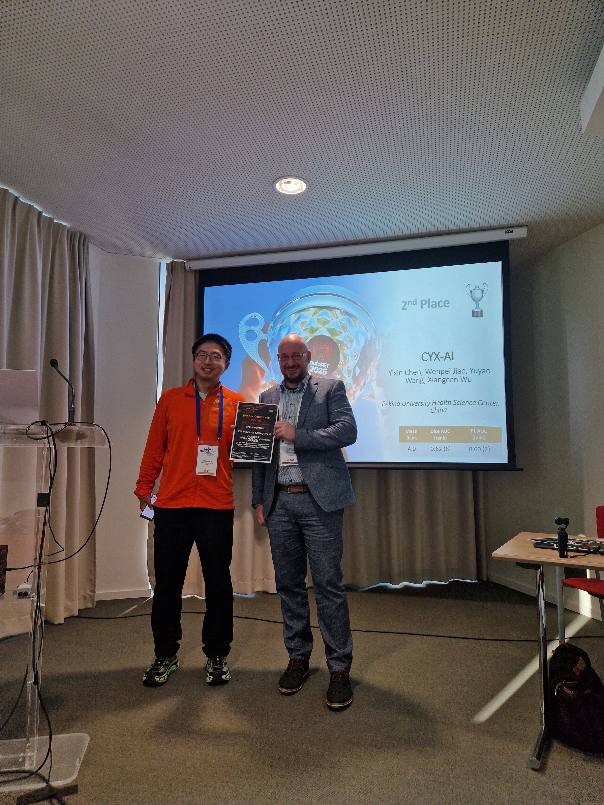
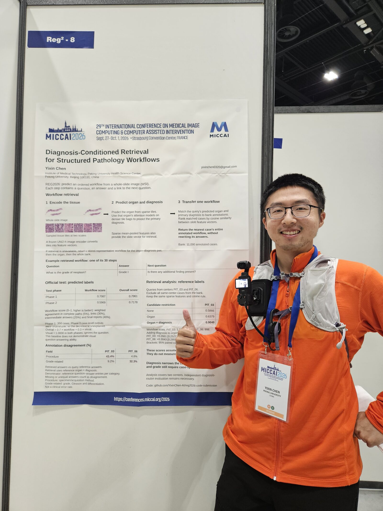
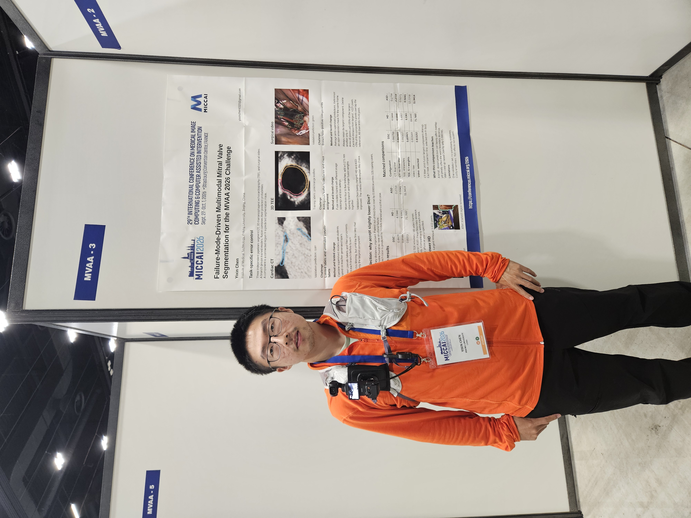
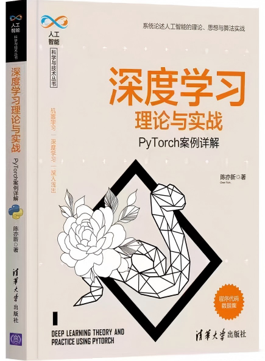
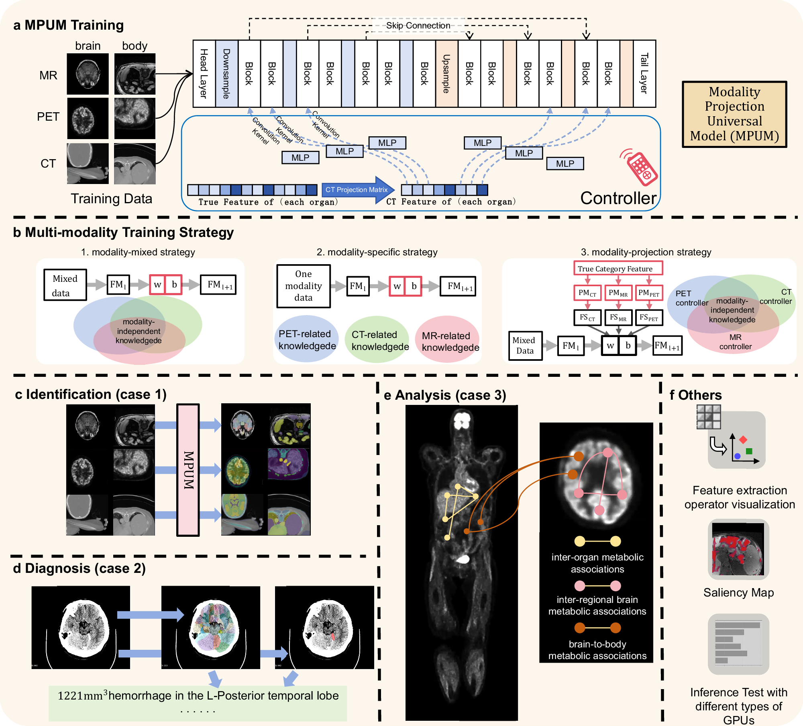
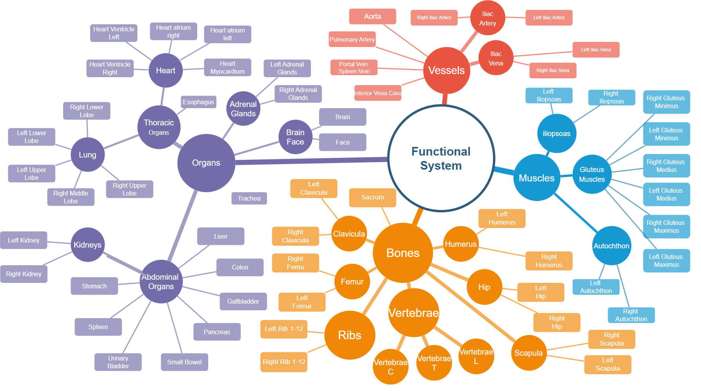
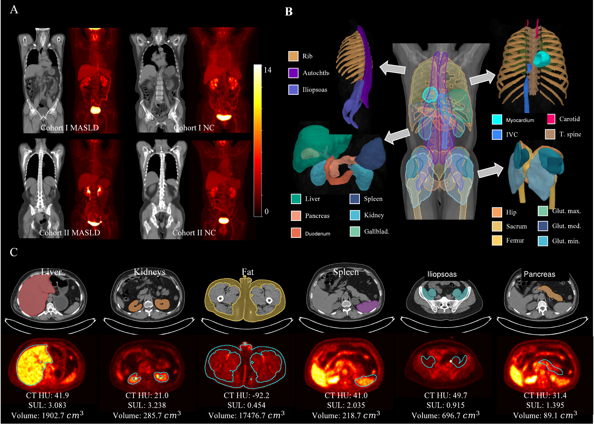

NSFC doctoral research project
Principal investigator of a project on extracting and analysing multi-organ metabolic information from total-body PET/CT.
2026–2027, NSFC grant for doctoral students
PhD candidate, Peking University
I work on medical image segmentation and learning across PET, CT and MRI. My clinical research focuses on cancer, fatty liver disease and multi-organ metabolism.
Principal investigator of a project on extracting and analysing multi-organ metabolic information from total-body PET/CT.
2026–2027, NSFC grant for doctoral students
MICCAI 2026 challenges

Our team, CYX-AI, developed an interactive PET/CT lesion segmentation method that combines neural-network corrections with local threshold updates.
Method and codeMulti-sequence cardiac MRI segmentation. Method paper selected for a CMRSeg challenge oral presentation.
Method paperMethod paper selected for a MICCAI 2026 challenge workshop poster.
Method paperMitral-valve segmentation across cardiac CT, 3D ultrasound and surgical video.
Method paper

Second author. Studies safe control of changes in neuronal microenvironments.
First author. Uses PET images to study disease trajectories.
Co-first-author study accepted in EJNMMI.
Co-first-author paper published in Nature Communications on 24 October.
First-author paper on visual prompting for cross-modality medical segmentation, using a pretrained model without access to its original training data.
First-author paper on anatomy-guided universal CT segmentation.
First-author paper and MICCAI 2024 poster. Image reconstruction guides adaptation to low-dose CT without low-dose segmentation labels.
Co-first-author study using anatomical structure to guide unsupervised domain adaptation.
Fourier visual prompting for medical segmentation domain adaptation.
September 2023–present
Algorithm Engineer
July–September 2022
Developed a model to predict the gap between an implanted ICL lens and the natural lens after surgery, using eye measurements and lens size.
Worked on ultra-widefield fundus image analysis, clinical requirements and medical-device registration.

Sole author. Published by Tsinghua University Press in 2021.
Medical Imaging Algorithm Engineer
November 2020–June 2022
Developed cardiac ultrasound models for image quality assessment, Doppler segmentation and measurement, septal defect detection and valve regurgitation analysis.
Worked with clinicians to integrate models into an ultrasound-assisted diagnosis system. Also contributed to an ovarian-tumour ultrasound system.
Wrote the manuscript during my studies in London, covering machine-learning methods and PyTorch examples.
January–October 2020
MSc in Artificial Intelligence, with Distinction
2019–2020
Began studying AI in London in September 2019, with coursework in computer vision, data mining and pattern recognition.
Xiamen University, 2015–2019. BSc in Automation and a second bachelor’s degree in Mathematical Finance.
Nature Communications, 2025
MPUMCo-first author
MPUM shares anatomical knowledge across CT, MRI and PET, while adapting its convolutional kernels to each imaging modality.
We trained the model with data from 861 subjects. Clinical studies examined anatomical localisation of brain haemorrhage and brain–body metabolic associations in paediatric epilepsy.
My contributionStudy conception, experimental design, code implementation and manuscript drafting.

MPUM framework and clinical studies. Original Figure 1.
View full figureIEEE TMI, 2024
PCNetFirst author
PCNet uses relationships between anatomical categories to guide multi-organ CT segmentation. Category prompts and hierarchical consistency constraints connect functional systems, organs and individual structures.
The paper evaluates universal segmentation and transfer to downstream segmentation tasks.

The anatomical hierarchy used in PCNet.
View full figureEJNMMI, accepted 2026
Whole-body PET/CT in MASLDCo-first author
We studied metabolic dysfunction-associated steatotic liver disease (MASLD) using PET/CT from 294 adults at two centres. Automated segmentation supported measurements of PET uptake, CT attenuation and tissue volume across organs.
Sixteen imaging features differed between MASLD and controls and were replicated at the second centre, spanning the heart, upper-abdominal organs, fat, vessels and muscle.
My contributionAnalytic approach, formal analyses, visualisation and manuscript drafting; contributed to study conception.

PET/CT, automated segmentation and organ-level quantification. Figure 2 from the accepted manuscript.
Chen, Zhou, Guo et al.
View full figure